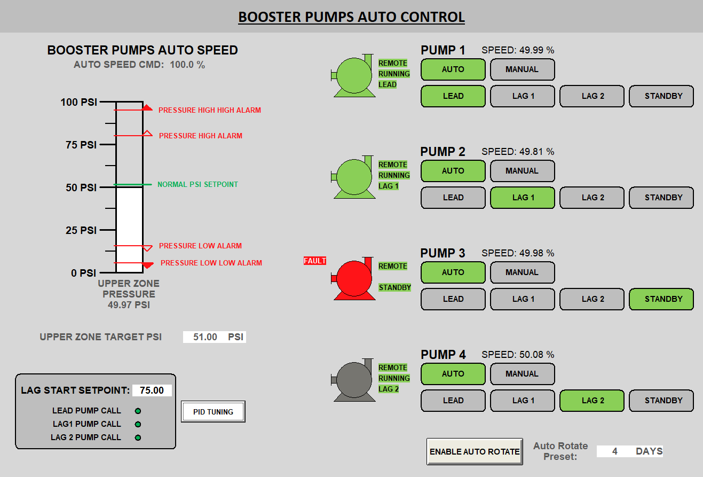
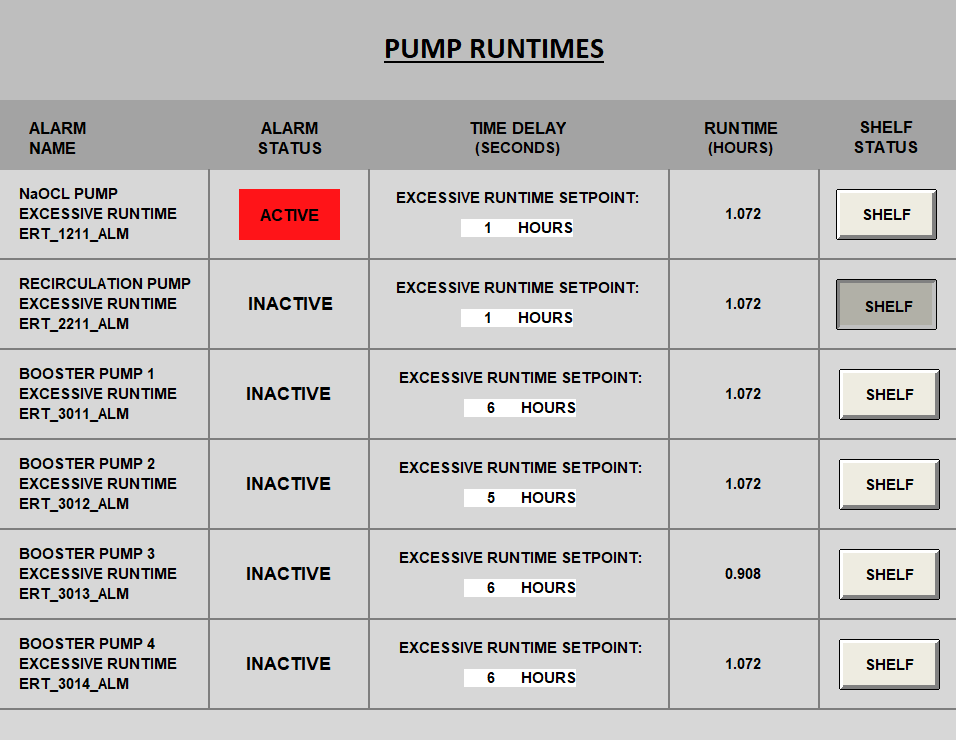
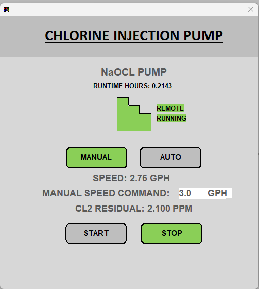
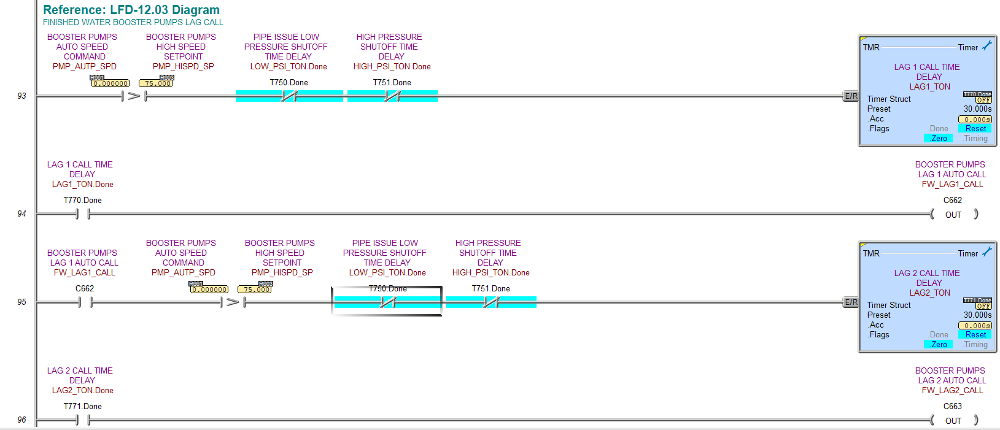
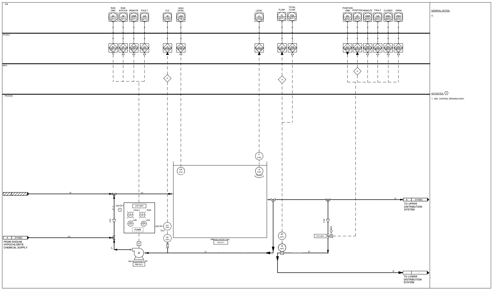
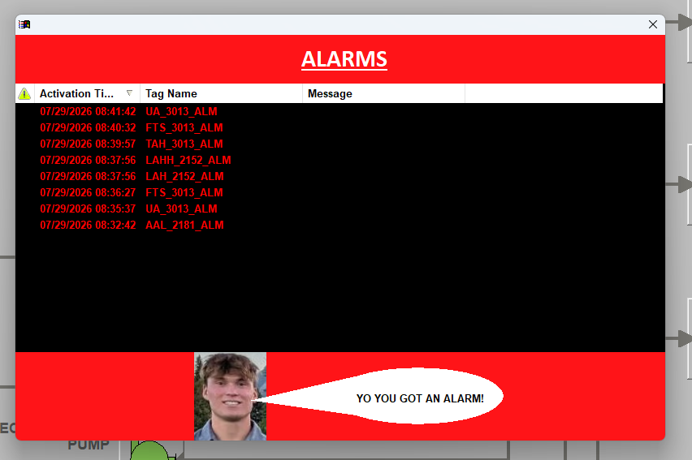
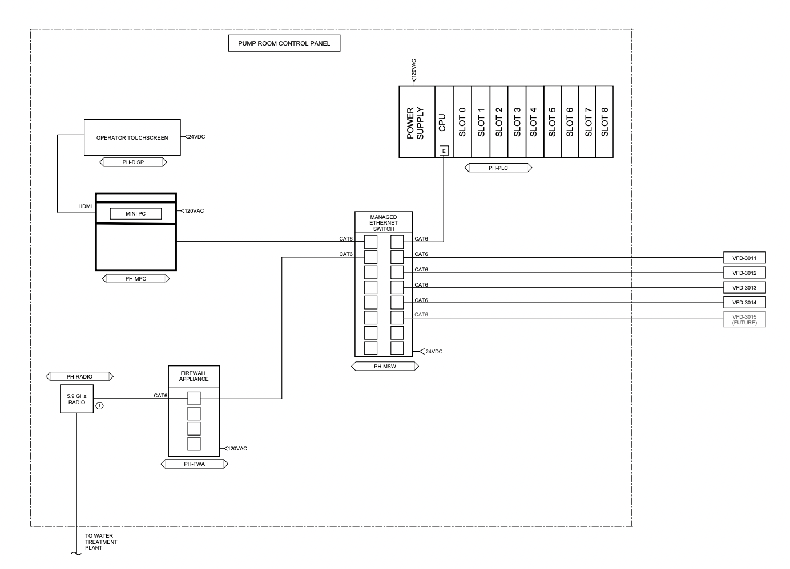

Automation · Control Systems · Human-Machine Interfaces
Pump Station Control System
An automated control system for a pump station that was designed, programmed, and factory acceptance tested as part of an intern practice project with HDR.

Project Summary
This project involved designing and testing a control system for a finished water pump station, representative of a similar pump station contructed in the Grand Canyon. The final product included a complete 22 screen Indusoft human-machine interface (HMI) and programmable logic controller (PLC) programming supporting 4 booster pumps, a chlorine injection system, and 2 distribution systems. The pump station was designed to transfer filtered drinking water from a water treatment plant to two distribution systems, one uphill and one downhill. The station features a 20 foot tank for finished water, a finished water recirculation pump, a chlorine hypochlorite injection system, a flow control valve for the lower distribution system, and booster pumps configured in a lead/lag1/lag2/standby configuration to transfer water to the upper distribution system.
DESIGN
Using Bluebeam, I drafted process and instrumentation drawings (P&IDs) for each stage of the pump station: finished
water recirculation, chlorine injection, upper distribution, and lower distribution. I used these P&ID drawings to
formulate I/O lists and draft control narratives: written descriptions of automation code.
PLC PROGRAMMING
Using the control narratives as a guide, I then drafted logical flow diagrams of each automated process, using logic gates,
timers, and math blocks to model each signal and process. With the flow diagrams as a guide, I created 14 ladder logic
programs in Do-more Designer to handle alarms, analog signal scaling, automated plant processes, signal trends, equipment
availability, and pump role control. The most difficult program handled role assignments for the four finished water booster
pumps, which operate with one pump in lead, one in the lag 1 position, one in the lag 2 position, and the final pump in standby.
When called to run, the lead pump's speed is modulated by a PID loop to maintain a operator-adjustable pressure setpoint. If the lead
pump's speed command exceeds a separate operator-adjustable setpoint, the lag 1 pump is automatically called to run. If the speed command
again exceeds the operator-adjustable setpoint, the lag 2 pump is called to run. If any pump becomes unavailable, the standby pump
automatically fills the role of the faulted pump and the faulted pump is assigned the standby role. The pumps can be configured to rotate
roles automatically according to an operater-adjustable setpoint, or can be switched to manual mode to bypass the role selection and
PID loop.
HMI PROGRAMMING
After completing the PLC programming, I used Indusoft Web Studio to create an industry-standard human-machine interface (HMI) to display
process information, alarms, trends, and analog information. Operators can change setpoints, monitor levels, shelf and disable alarms, and
view historical data by navigating through the 14 HMI screens.
FACTORY ACCEPTANCE TESTING
At the conclusion of the project, I drafted a factory acceptance testing (FAT) document to confirm the functionality of every input, output,
and process signal. After confirming their functionality, I presented my test to senior engineers and company leaders from across the HDR
controls business group.
System Features
4 Booster Pumps
Automated control for 4 pumps using a PID loop and setpoints
Warnings and Alarms
Customizable analog and digital alarms with automated inhibits of affected equipment
Trend Navigation
Customizable trends navigation screen for viewing the historical data of any analog value
Chlorine Injection
A separate subsystem maintains a chlorine residual setpoint using a PID loop
Technical Deep Dive
Booster Pump Role Control

One of the primary design requirements for the pump station was the ability to scale output flow to match varying demand. To achieve this, the pumps are each assigned a unique role: lead pump, lag 1 pump, lag 2 pump, and the standby pump. Each role must always be occupied, and no two pumps can occupy the same role. When demand is low, only the lead pump is called to run. As demand increases, the lag 1 and lag 2 pumps are called to run respectively to meet rising demand.
To achieve this, each pump is passed the same speed command from one PID loop comparing an operator-adjustable setpoint to output pressure. If the speed command exceeds the "Lag Start Setpoint," the lag 1 pump is called to run. If the speed command again exceeds the lag start setpoint while the lead and lag 1 pump are running, the lag 2 pump is called to run. If the pressure setpoint is decreased, the pumps will turn off in reverse order as the speed command falls to again match the output pressure to the setpoint. In ladder logic, this functonality was programmed as a descending ladder of conditions, checking which role each pump occupied, any role adjustment inputs, and inhibiting each pump's start command if its role is not called upon. If a fault is detected, the standby pump is called to replace the faulted pump.
Key Features
- PID loop for speed commands
- Automatic reassignment for faults
- Manual and automatic modes
- Automatic role rotation
Equipment Runtime Alarms

For each pump, a tick timer and clock maintains a runtime timer that can be monitored by an operator and compared to an operator-adjustable setpoint. If the runtime timer exceeds its setpoint, the corresponding excessive runtime alarm is activated, opening the alarm log and turning the corresponding pump red without disabling it. This allows operators to be made aware of potentially dangerous pump conditions without abruptly shutting down a component of the station. Once the excessive runtime alarm is activated, operators can shelf the alarm to temporarily disable the alarm without removing it from the alarm log. Once the corresponding pump is turned off, its runtime timer resets and any excessive runtime alarm that was active is deactivated.
Key Features
- Shelf functions to acknowledge alarms
- Operator-adjustable setpoints
Photo Gallery





